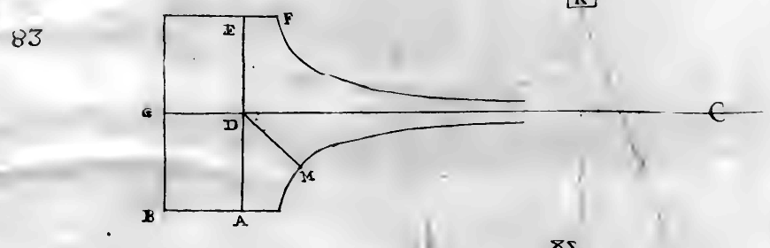

Propositio XVI · Theorema XVI¶


PROP. XVI. THEOR. XVI.
Sit AMCE semisectio per axem AE solidi praedicti, & applicetur ipsi AE rectangulum BE, ita vt BA sit aequalis semiaxi DM oppositarum sectionum, ostendendum est punctum D esse centrum grauitatis plani BECMA, quamuis infinitae longitudinis versùs C, dempto rectangulo AF.
Quoniam ostendimus in praecedenti propositione, quod solidum rotundum, & infinitè latum genitum ex conuersione plani FKC circa axem FC est aequale cylindro genito ex conuersione rectanguli ZR circa axem Z, vnà cum cylindro GI, cuius axis FC (in marg. tab. 10. fig. 83.), estque CD ad CF longitudine, vt DM ad MN, seu ad XZ potentia; si concipiatur cylindrus, cuius altitudo CF, & basis semidiameter DM; erit hic aequalis cylindro praedicto, cuius axis Z; & ideò constat conceptum hunc cylindrum aequalem esse solido FKCE infinitae latitudinis, dempto ex eo
f. 0098 · p. 81cylindro GI, illo nempe, qui fit ex conuersione rectanguli CL circa axem FC; hoc est, in praesenti etiam figura, liquet cylindrum genitum ex conuersione rectanguli BE circa axem AE aequalem esse solido rotundo, ac infinitae latitudinis, ex reuolutione plani EFCMA circa eundem axem EA progenito, dempto tamen ex hoc solido, cylindro, cuius semirectangulum ad axem est AF. Momentum igitur rectanguli BE momento plani FCM infinitae longitudinis versùs C aequale erit (in marg. ex pulcro lemm. 31. Torricellij in dimens. parabola.), si planum vniuersum EBAMCFE super recta EA libretur, & rectangulum AF nullius ponderis concipiatur. Erit igitur in linea finita EA centrum grauitatis praedictorum duorum planorum sic constitutorum tanquam vnius magnitudinis, & ideò (licet incredibile videatur) cum magnitudo haec habeat grauitatis centrum, illud erit etiam in diametro GC eiusdem planae magnitudinis; quare in D communi sectione linearum AE, GC reperitur, quod &c.